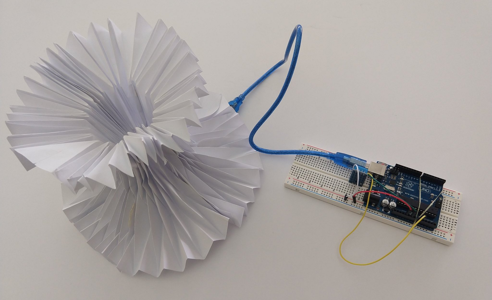
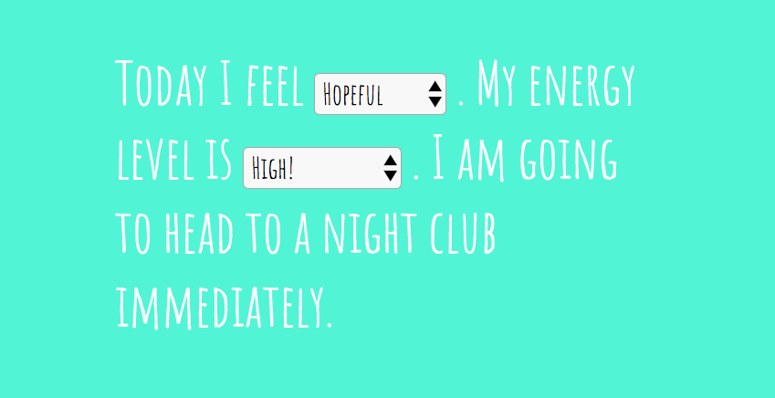
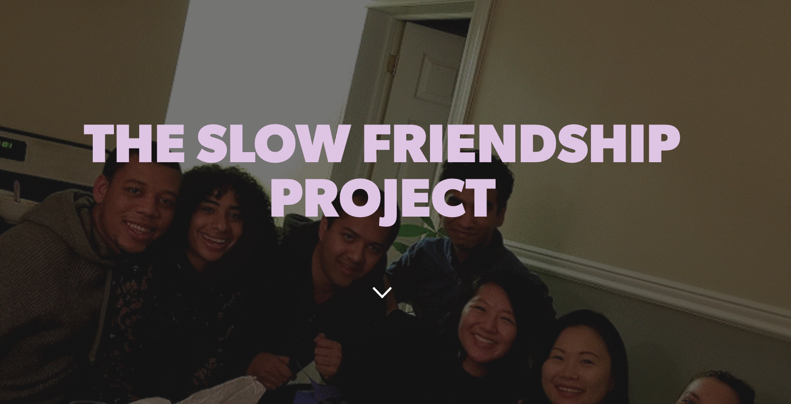
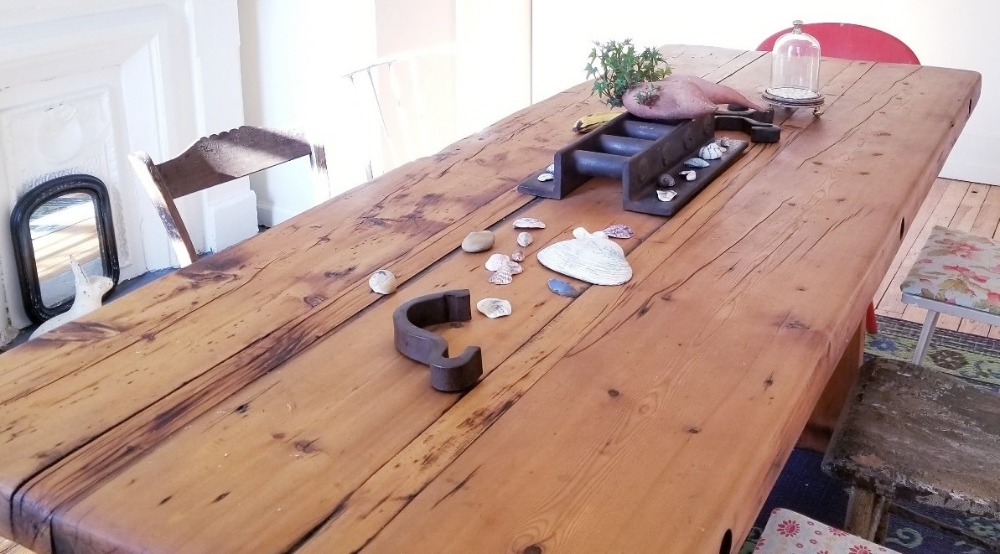

Not Another SAD Light
is a code/art installation that was commissioned by MIF, to visualize the
stories that we leave behind. I performed sentiment analysis on tweets and used the Philips Hue API to change the
light in coordination with the emotion. Featured on the BBC.
Code
Code

Artificial Brain Opera
is a code/art installation using a brain computer interface and text analysis to expose our vulnerabilities and
inner selves. This project was created in partnership with Thoughtworks and Art-A-Hack.
Code: speech-to-text, sentiment analysis, arduino, Neurosky, p5.js, python
Code: speech-to-text, sentiment analysis, arduino, Neurosky, p5.js, python

Breathe of Sound
is a code/art project from a hackathon at MIT Media Lab. It uses the breath and heartbeat of audience members to co-create a musical performance.
Code: Max MSP, Arduino, JavaScript, Processing
Code: Max MSP, Arduino, JavaScript, Processing

DecisionsDecisions
Having trouble figuring out what to do today? Channel the powers of Javascript to make a decision based on your mood
and energy level.
Code
Code

The Slow Friendship Project
is about taking a breather -- slowing down to have conversations with people we might not normally meet in our
daily rush.

Side Project Friendships
is a get together of 6 strangers (we prefer to call them soon to be friends) to work and chat together. Bring
yourself, a potluck dish, and a side project/idea.